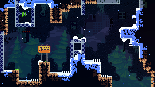
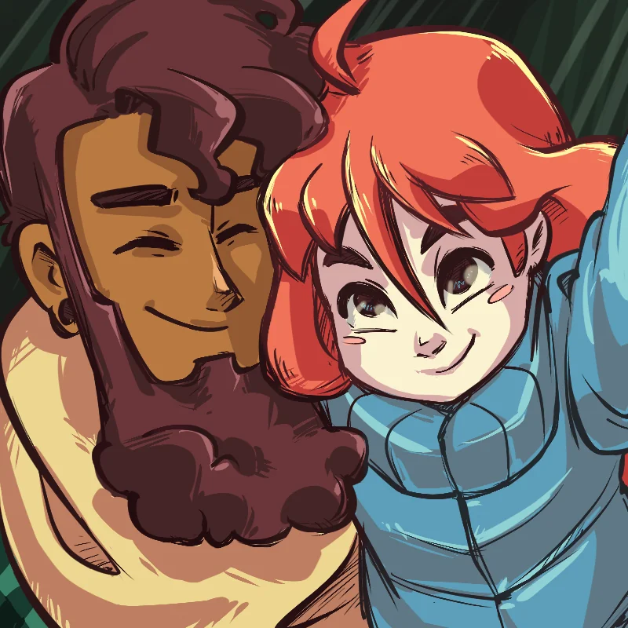

Na fase Forsaken City de Celeste, Madeline inicia sua escalada pela Montanha Celeste em busca de superação pessoal. A cidade abandonada cria uma atmosfera solitária e misteriosa, mostrando desde o começo que a jornada será difícil tanto fisicamente quanto emocionalmente.

Durante a subida, Madeline conhece Theo, um viajante descontraído que também explora a montanha. A conversa entre os dois ajuda a apresentar a personalidade ansiosa da protagonista e introduz os temas de autoconhecimento e enfrentamento pessoal que serão importantes ao longo da história.
